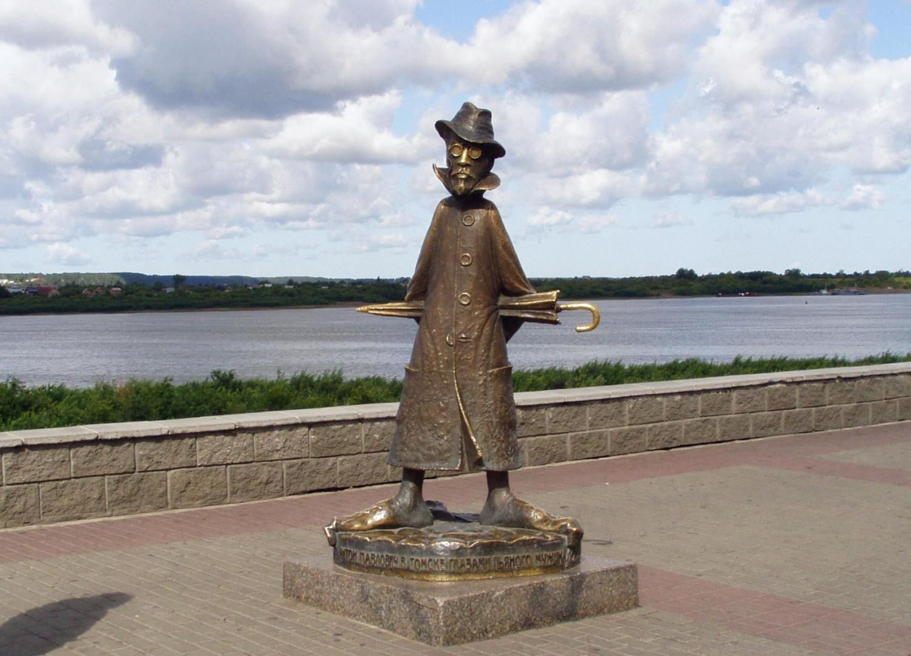
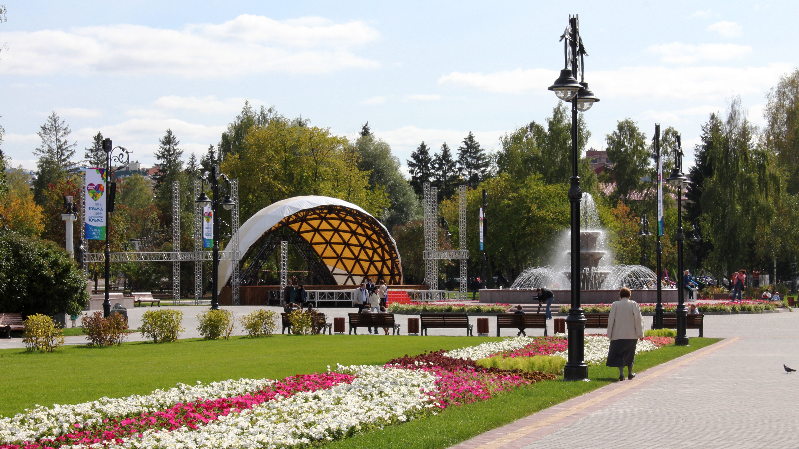
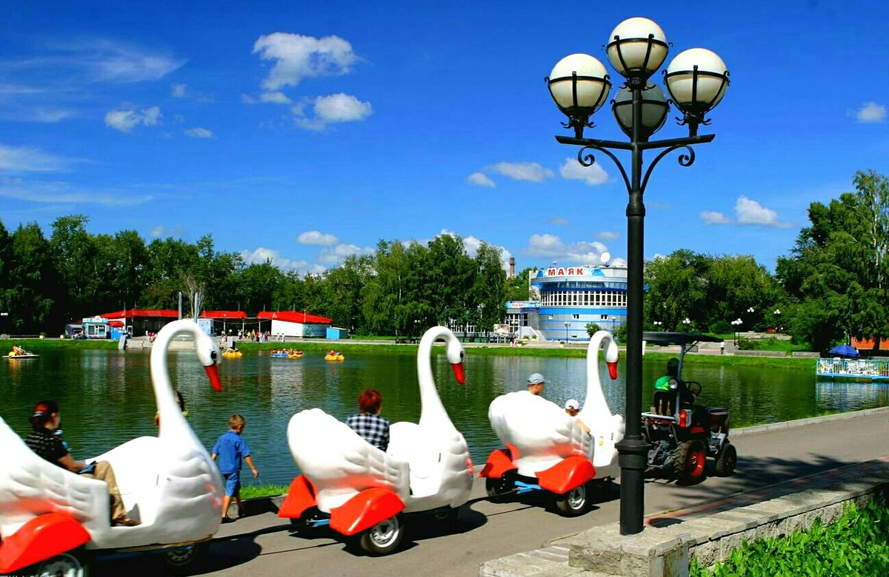
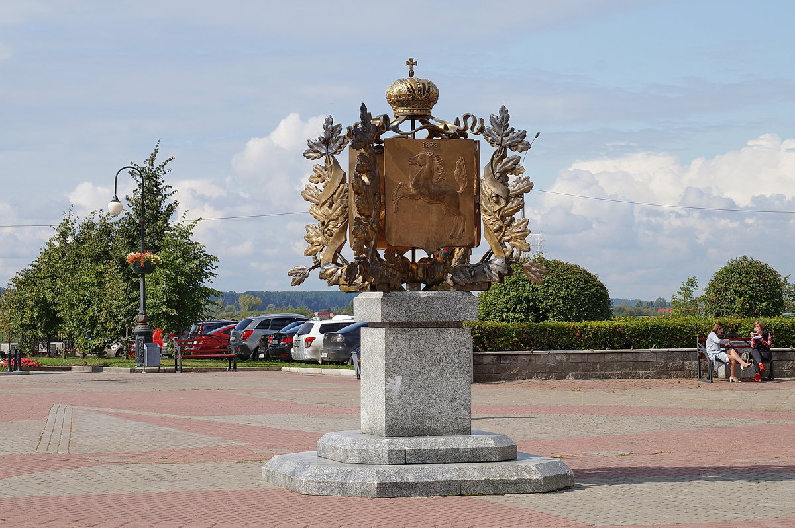

Любимые достопремечательности города
Город, в котором я живу, славится своими красивыми зданиями, музеями и парками. Если вы посетите его когда-нибудь, обязательно посетите эти известные достопримечательности:
- Памятник Антону Чехову 
- Ново-Соборная площадь 
- Белое озеро 
- Памятник "400 лет Томску" 